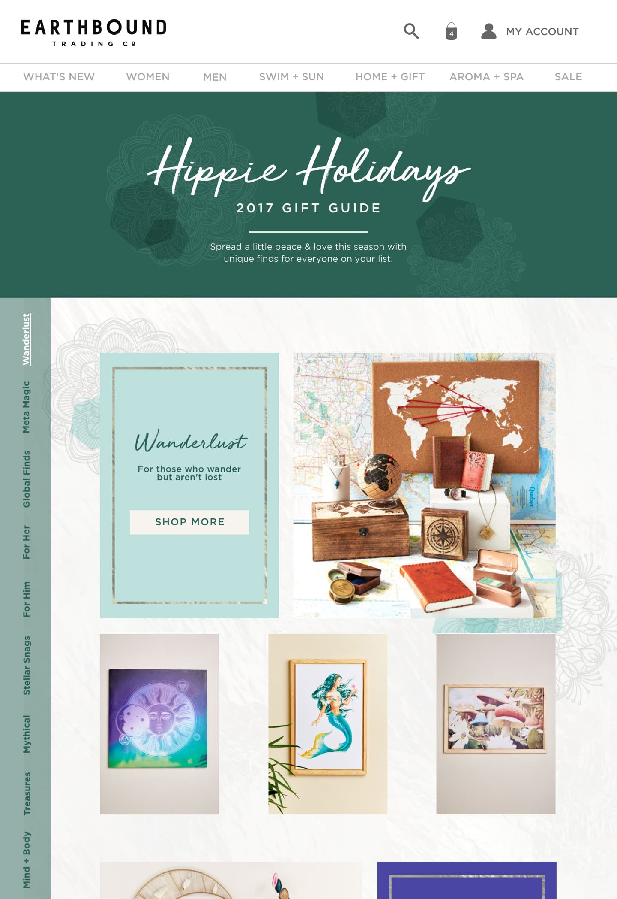
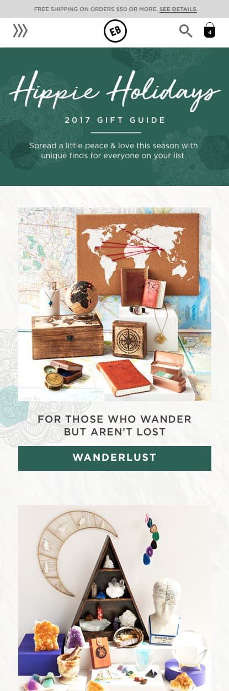

Gift Guide
Gift Guide 2017
Gift Guide 2017 is a landing page for users to shop holiday gifts from our several eccentric categories.
Desktop
Mobile
The challenge
Last season we had an unusual amount of products that were challenging to group together into categories. The team decided to get a little wild and come up with unique category groupings. Presenting all this content was a challenge, especially for mobile.
We wanted to make our gift guide festive and add some interaction to the shopping experience. Gift Guide 2017 is a landing page for users to shop holiday gifts from our several eccentric categories.
Research and discovery
In our research, we found most of our competitors kept their gift guide's vanilla and static. We did come across a few interactive gift guide's and took some functionality that would help our customers move through our long gift guide.
There was a lot of pressure to succeed in profits, and we already knew the more product we could exhibit the better.
I researched some of our technical options to understand what I could extend technically to meet our needs. There was no room in the budget for extravagant technical solutions.
Sketching wireframes
Vertical Navigation: In sketches, we discovered that we needed vertical navigation because we had so many categories. We also required the vertical navigation to scroll when its length became an issue on specific desktop sizes. That led me to suggest we make the vertical nav sticky to one side and use anchor links to each category so users could quickly browse.
Main Navigation: We were getting pressure to capitalize on this campaign, so we broke our rule never to change the main navigation and planned the Gift Guide to remain in the main nav throughout the holiday season.
Mobile Adaptation: Resizing the enormous amount of content down to mobile proved a terrible experience. It was unlikely users would stick around and get to the lower categories. We removed the vertical nav because it would not fit. We compromised and cut out the product groupings and used a single image and shop button to represent each category to keep the scrolling on mobile down to a minimum.
You want to do what? On desktop, stakeholders were happy with the amount of content. They liked having both titles and 'Shop Now' buttons for every category section, which proved a technical challenge on mobile after prototyping it. The unusual fonts chosen by another team were a challenge to work with on mobile, and they were scrapped. As the developer, I had to change the button HTML text to be different on mobile from the desktop so that users could understand the context of their shopping experience.
Product blocks
Content managers especially liked that they could rotate out the product image blocks themselves. I found a piece of unused code hidden away in our Magento templates. I edited it to the design specs and hooked it up to the CMS.
All in all, everything worked out well, and we did have a good holiday season.